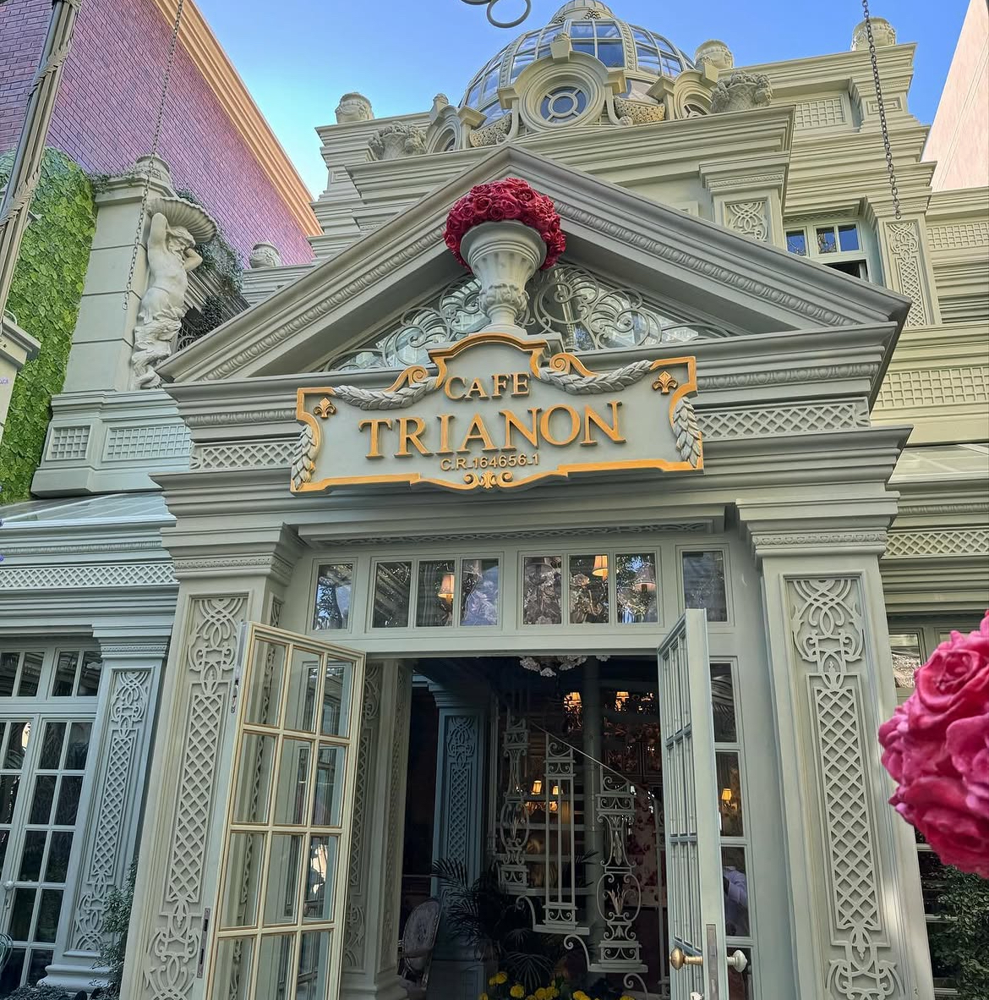
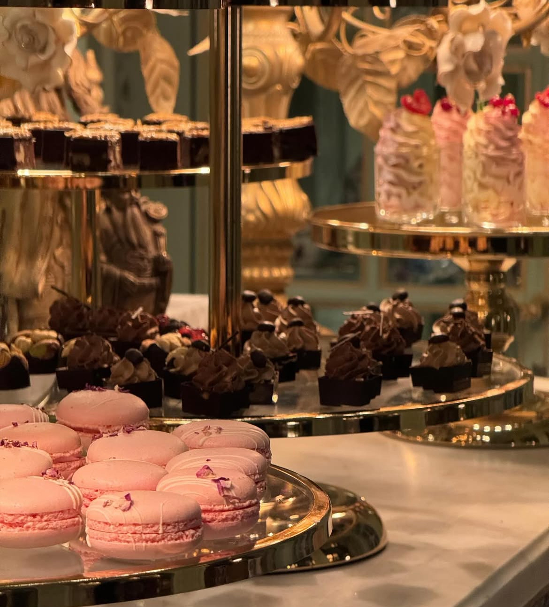
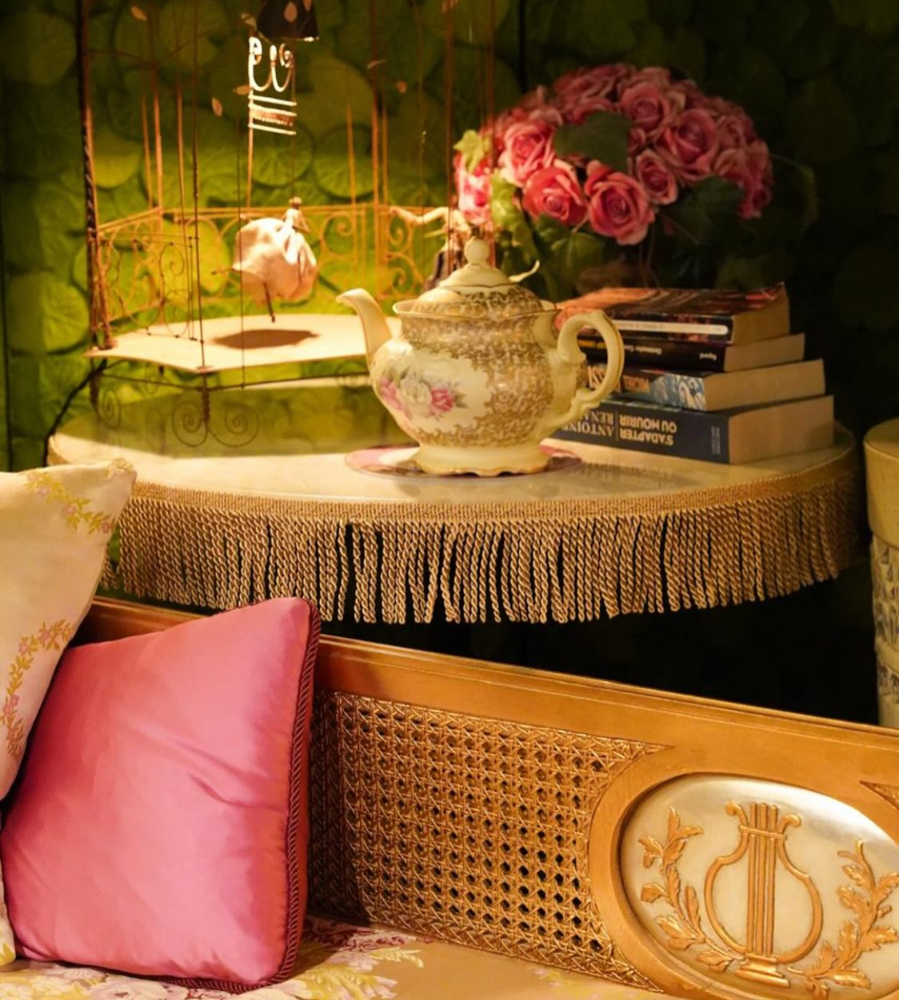

Authentic French Cuisine
Classic Parisian recipes crafted with the finest imported ingredients, bringing the art of French brasserie culture to the heart of Bahrain.



Pavilion Bahrain · Fine Dining
French Brasserie & Patisserie · Bahrain
Classic Parisian recipes crafted with the finest imported ingredients, bringing the art of French brasserie culture to the heart of Bahrain.
A warm, sophisticated atmosphere inspired by the grand brasseries of Paris for a truly unforgettable dining experience at Pavilion Bahrain.
Handcrafted pastries, cakes, and macarons made fresh daily by our skilled in-house pastry chefs using traditional French techniques.
to the vibrant culinary scene of Pavilion Bahrain. Founded with a passion for authentic French flavours, our restaurant celebrates the art of fine dining through classic recipes prepared with exceptional care. Our chefs draw inspiration from the grand brasseries of Paris, using premium imported ingredients to create dishes that honour French culinary tradition while embracing the warmth of Bahraini hospitality.
From our handcrafted macarons to our slow-braised Boeuf Bourguignon, every dish tells a story. We source our produce from trusted suppliers and our desserts are made fresh each morning by our dedicated pastry team.
Whether it's a romantic dinner, a family celebration, or a business lunch — Trianon offers an unforgettable experience at Pavilion Bahrain.
Make a Reservation